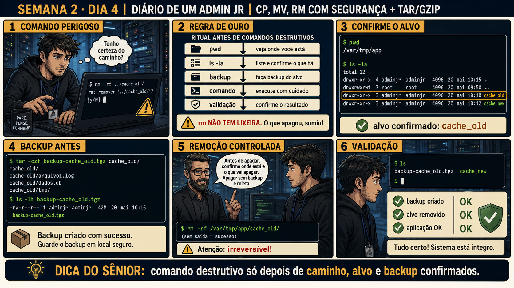

DIARIO DE UM ADMIN JR. | FASE 1 — LINUX, DO BÁSICO AO AVANÇADO
🧠 Antes de começar — 20 segundos de memória (Dia 3)
1. Ontem você usou find para localizar arquivos por nome e data. Sem olhar: qual a diferença entre o que grep encontra e o que find encontra? 2. Por que investigar "centenas de logs" ontem exigia ferramenta de busca, e não rolar tela com less?
1.grep acha texto dentro dos arquivos; find acha os arquivos em si (por nome, data, tamanho). Hoje isso volta de outro jeito: antes de apagar algo, você precisa ter certeza de que achou o arquivo certo (find) antes de decidir o que fazer com ele (rm). 2. Porque em escala, ferramenta manual não escala — e o mesmo raciocínio vale para comando destrutivo: fazer no "olho" sem ritual escala mal e é onde o erro mora.
🔗 Conecta com Semana 1, Dia 4: lá você aprendeu a identificar o que estava
consumindo espaço, sem apagar nada. Hoje você finalmente ganha permissão pra apagar de verdade — e junto com
ela, o ritual que existe justamente porque rm não tem lixeira.
🔓 Privilégio de hoje: mover, copiar e apagar arquivos, com ritual de segurança
obrigatório. Você ganha autorização pra usar cp, mv e rm em produção — mas nunca sem confirmar caminho,
alvo e backup antes.
Semana 2 · Dia 4 | Nível Júnior
cp, mv, rm com Segurança + tar/gzip
pwd → ls -la → backup → comando → validação — nessa ordem, sempre, sem exceção
ANTES DE ALTERAR, OBSERVE. DEPOIS DE ALTERAR, VALIDE.

1. O chamado
#4890PRIORIDADE MÉDIA15:00aberto por: coordenação de infra
host: srv-app-03 · serviço: espaço em disco — pasta de cache
"Uma pasta de cache antiga (cache_old/) precisa ser removida pra liberar espaço."
Seu dedo já está perto do Enter em cima de rm -rf ../cache_old/ — mas você ainda não confirmou se está na pasta certa, nem fez backup de nada. O que falta?
💡 Passa o mouse nas palavras destacadas pra ver uma dica rápida — clica se quiser a explicação completa com analogia.
2. O sênior te conta
🧑🏫 antes dos termos técnicos, a história de hoje
Hoje o Júnior precisava apagar uma pasta de cache antiga pra liberar espaço. O dedo dele já estava quase
em cima do Enter, em cima de rm -rf ../cache_old/ — mas ele ainda não tinha confirmado se
estava na pasta certa, nem feito backup de nada. Segurei a mão dele bem na hora.
Expliquei uma coisa que ele nunca tinha pensado assim: rm não tem lixeira. Não existe
"restaurar" depois. É diferente de tudo que ele fez até agora nesta semana — restart de serviço reverte
(para de novo), permissão errada reverte (chmod de volta), mas um arquivo apagado sem backup está apagado
pra sempre. Por isso existe um ritual fixo, sempre na mesma ordem: confirmar onde está, listar o que tem
ali, fazer backup, só então executar, e validar depois.
E teve o detalhe que quase pegou ele: ../cache_old/ é um caminho RELATIVO — depende de onde
você está no momento exato em que aperta Enter. Se ele tivesse mudado de pasta um comando antes sem
perceber, esse mesmo comando apagaria outra coisa completamente diferente. Foi por isso que ensinei: nunca
caminho relativo apressado em comando destrutivo — sempre caminho absoluto, confirmado por pwd primeiro.
3. Decodificador de conceitos
Clica em qualquer termo pra ver a definição completa e uma analogia do dia a dia:
4. Ferramentas e leitura da evidência
Comando
O que observar e por que importa
pwd / ls -la
Confirma onde você está e o que existe ali antes de qualquer ação.
tar -czf backup.tgz pasta/
Cria uma cópia compactada do alvo antes de tocar nele.
rm -rf /caminho/absoluto/confirmado/
Remove de fato — sempre com caminho absoluto e já confirmado, nunca ../ apressado.
$ pwd
/var/tmp/app
$ ls -la
drwxr-xr-x 3 adminjr adminjr 4096 mai 20 10:10 cache_old
drwxr-xr-x 3 adminjr adminjr 4096 mai 20 10:12 cache_new
$ tar -czf backup-cache_old.tgz cache_old/
$ ls -lh backup-cache_old.tgz
-rw-r--r-- 1 adminjr adminjr 42M mai 20 10:16 backup-cache_old.tgz
$ rm -rf /var/tmp/app/cache_old/
$ ls
backup-cache_old.tgz cache_new
5. Laboratório guiado — pegue na mão, comando por comando
Segurança: execute os testes apenas em VM descartável e confirme nomes de discos, hosts e arquivos antes de cada comando.
Ação: Crie uma pasta de teste com alguns arquivos dentro.
Resultado esperado: pasta criada com 2 arquivos, confirmada com ls.
Por que fizemos isso: você precisa de um alvo descartável de verdade pra praticar o ritual completo sem risco — nunca pratique comando destrutivo em algo que importa.
Cilada comum: praticar num diretório que também tem arquivos reais misturados — isole sempre o teste numa pasta própria, vazia antes de começar.
Ação: Confirme onde está e o que existe ali, como ritual, antes de qualquer ação.
pwd
ls -la
Resultado esperado: caminho absoluto confirmado, conteúdo da pasta visível.
Por que fizemos isso: esse é o passo que a história de hoje mostrou que quase falhou — confirmar ANTES é o que evita usar caminho relativo apontando pro lugar errado.
Cilada comum: rodar pwd uma vez no início da sessão e confiar nesse resultado horas depois — confirme de novo, sempre, logo antes do comando destrutivo, não só no começo do dia.
Ação: Faça backup da pasta de teste antes de tocar nela.
tar -czf backup_teste.tgz teste_cache/
ls -lh backup_teste.tgz
Resultado esperado: arquivo backup_teste.tgz criado, confirmado com ls -lh.
Por que fizemos isso: rm não tem lixeira — o backup É o rollback. Sem esse passo, não existe "desfazer" possível depois.
Cilada comum: fazer o backup mas não confirmar que ele realmente foi criado com conteúdo (ls -lh mostrando tamanho > 0) — um backup vazio ou corrompido dá falsa sensação de segurança.
🧑🏫 Aqui entra o Mentor (em breve): se você tiver dúvida sobre se algo é seguro de apagar, este é o ponto onde o chat com o Sênior-IA vai ajudar a pensar no risco antes de agir.
Se o seu resultado foi diferente
"tar: teste_cache/: Cannot stat: No such file or directory" → você não está na pasta onde criou teste_cache. Confira com pwd e ls antes de repetir o comando.
Ação: Remova a pasta de teste usando o caminho absoluto completo, confirmado pelo pwd do passo 2.
rm -rf /caminho/absoluto/confirmado/teste_cache/
Resultado esperado: pasta removida, backup ainda existe intacto.
Por que fizemos isso: caminho absoluto (começando com /) sempre aponta pro mesmo lugar, não importa de onde você rodou o comando — elimina o risco de ../ apontar pro lugar errado.
Cilada comum: copiar e colar um caminho relativo (../teste_cache/) de um comando anterior sem adaptar pro absoluto — é exatamente esse tipo de descuido que causa remoção no lugar errado.
Se o seu resultado foi diferente
Não sei qual é o "caminho absoluto confirmado" → é a saída exata do pwd do passo 2, com /teste_cache no final. Exemplo: se o pwd mostrou /home/adminjr, o comando é rm -rf /home/adminjr/teste_cache/. "rm: cannot remove ... No such file or directory" → o caminho digitado não bate com o do pwd. Copie o caminho absoluto exato, não digite de memória.
Ação: Valide o resultado final e documente o ritual completo.
ls
# registro: alvo confirmado (pwd/ls), backup criado (tar), alvo removido (rm), sistema íntegro (ls final)
Resultado esperado: um registro de 4 linhas reproduzindo exatamente o painel 6 da prancha de hoje.
Por que fizemos isso: validar depois é o que fecha o ciclo — sem essa checagem final, você não tem prova de que o ritual funcionou como esperado, só a expectativa de que funcionou.
Cilada comum: considerar a tarefa terminada assim que o rm roda sem erro — "não deu erro" não é o mesmo que "validei que o resultado é o esperado".
6. Antes de ver as opções — tenta responder
🧠 Recall ativo: qual é a sequência completa do ritual antes de qualquer comando destrutivo?
pwd →
ls -la →
backup →
comando executado com cuidado → validação do resultado. Pular qualquer etapa é convite pro desastre.
QUESTÃO 1 de 3
7. Questão comentada — clica numa alternativa
Você precisa remover a pasta cache_old/ pra liberar espaço em disco. Qual é a
sequência correta de passos?
💡 Analogia do Sênior para Fixar: Criar um backup com extensão .bak antes de editar é como colocar a rede de proteção antes de andar na corda bamba: se o arquivo corromper, você volta em 2 segundos.
QUESTÃO 2 de 3 — cenário de erro real
7.1 O backup foi feito, mas alguém pede pra pular essa etapa "pra ganhar tempo"
Um colega apressado sugere: "essa pasta é só cache, não precisa de backup, pode apagar direto e ganhar
tempo".
Qual é a resposta tecnicamente correta pra essa sugestão?
💡 Analogia do Sênior para Fixar: O comando 'rm -rf' no Linux é como incinerar documentos sem lixeira: não existe botão 'Desfazer'; o que foi apagado desapareceu do sistema de arquivos.
QUESTÃO 3 de 3 — detalhe que confunde todo iniciante
7.2 "rm -rf ../cache_old/ e rm -rf /var/tmp/app/cache_old/ são a mesma coisa, né?"
Um colega acha que caminho relativo (../cache_old/) e caminho absoluto
(/var/tmp/app/cache_old/) sempre apontam pro mesmo lugar.
Por que essa suposição é perigosa num comando destrutivo como rm -rf?
💡 Analogia do Sênior para Fixar: Usar a flag '-i' (interativo) no rm ou cp é como a confirmação de transferência bancária: pede confirmação antes de sobrescrever ou destruir dados.
8. Procedimento profissional
Confirme onde está com pwd, sempre, antes de qualquer comando destrutivo.
Liste o conteúdo com ls -la e confirme visualmente que é o alvo certo.
Faça backup com tar/gzip do alvo antes de tocar nele.
Execute o comando com caminho absoluto, nunca relativo apressado.
Valide o resultado — confirme que o alvo sumiu e que o backup existe.
Prevenção — o que evita repetir esse tipo de problema
Padronize um alias ou script wrapper de "remoção segura" no time (que exige backup antes
de aceitar o rm) pra quem está começando não depender só de lembrar o ritual de cabeça. Documente a regra
"nunca caminho relativo em comando destrutivo" no onboarding, com o exemplo real de hoje como ilustração do
risco.
9. Validação e encerramento
pwd e ls -la foram conferidos antes de qualquer comando destrutivo.
Backup foi criado e confirmado antes da remoção.
Caminho usado no rm era absoluto e conferido, nunca relativo apressado.
Resultado final foi validado: alvo removido, backup existente, sistema íntegro.
Rollback e limites
rm não tem lixeira — o "rollback" de uma remoção é restaurar a partir do backup
feito antes. Se não existir backup, não existe rollback possível. É exatamente por isso que o backup nunca
é opcional nesse ritual.
💡 Sobre repetição espaçada: "confirme antes de agir" já apareceu como
observação (Semana 1) e como aprovação (Semana 2, Dia 1) — hoje ele vira ritual formal antes de qualquer
ação irreversível. O Anki vai conectar os três.
10. Resposta final
Alternativa correta: B. Nesta aula, a decisão correta foi confirmar o
caminho com pwd, listar com ls -la, fazer backup com tar/gzip, executar o rm com o caminho confirmado, e
validar o resultado. O ponto central do caso é este: comando destrutivo só depois de caminho, alvo e
backup confirmados.
🔓 O que você desbloqueou hoje
Autorização pra usar cp, mv e rm com segurança em produção, sempre com o ritual
completo. Amanhã fecha a Semana 2: uma primeira olhada em rede e agendamento, ainda só de leitura.